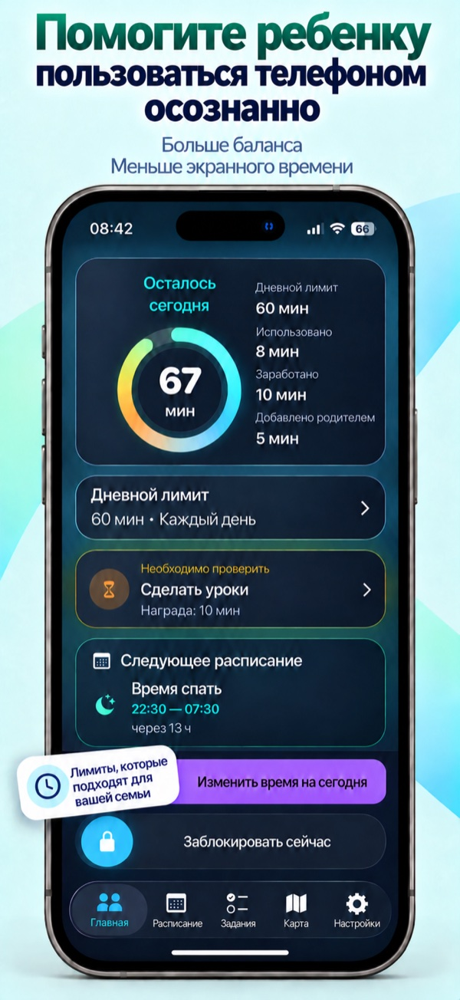
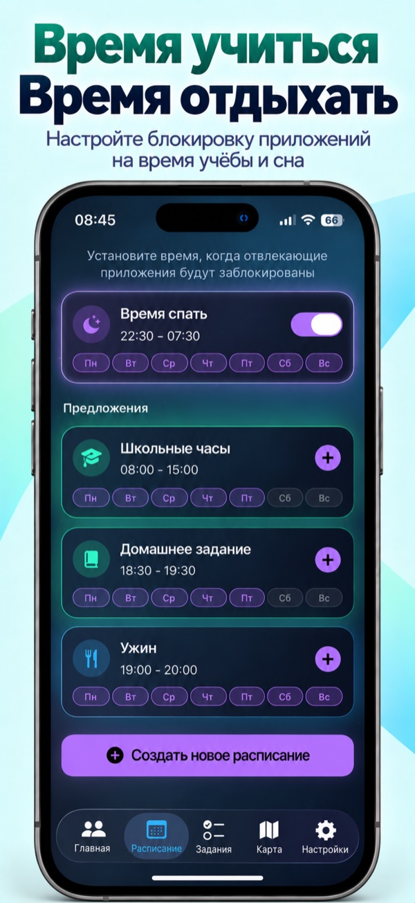
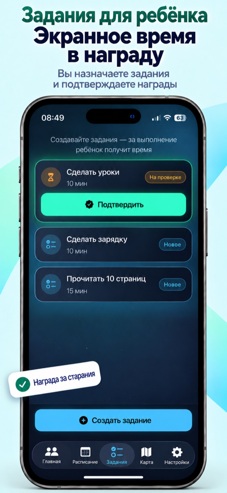
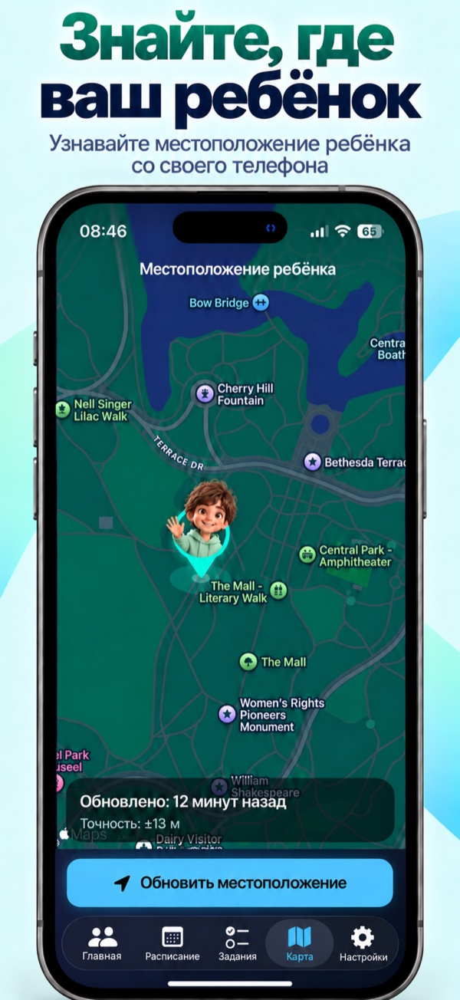

Свой ритм на каждый день
Одинаковый дневной лимит на всю неделю или разное время для каждого дня. Меньше в учебные дни, больше в выходные — решать вам.
Больше баланса каждый день
Понятные правила и время для жизни вне экрана. Задавайте лимиты, планируйте перерывы и поощряйте выполненные задания — со своего телефона.
Одно приложение. Два телефона. Роли родителя и ребёнка.
Для вашей семьи
Всё, чтобы телефон занимал своё место в жизни ребёнка, а не всё свободное время.
Одинаковый дневной лимит на всю неделю или разное время для каждого дня. Меньше в учебные дни, больше в выходные — решать вам.
Выберите часы блокировки приложений: для сна, учёбы или семейного ужина без телефона.
Создайте задание с наградой в минутах. Ребёнок отправит выполненное задание на проверку, а вы подтвердите результат и начислите время.
Запрашивайте местоположение и смотрите его на карте.
Блокируйте и разблокируйте выбранные приложения, меняйте доступное время на сегодня и смотрите остаток. Подробная статистика использования доступна на телефоне ребёнка в родительском режиме, защищённом PIN-кодом.
Посмотрите поближе




Листайте, чтобы посмотреть все экраны →
Начните вместе
Пошаговые подсказки помогут включить нужные разрешения и подготовить приложение к работе.
На своём телефоне выберите роль родителя, а на телефоне ребёнка — роль ребёнка.
Создайте код связи на телефоне родителя и введите его на телефоне ребёнка.
Разрешите доступ к «Экранному времени», выберите приложения, установите родительский PIN и подтвердите дневной лимит.
Полезно знать
Нет. Вы сами выбираете приложения для контроля. Лимиты и расписания применяются к выбранным приложениям, а не блокируют телефон целиком.
Да. После связывания устройств родитель может менять лимиты, расписания и задания, включать и отключать блокировку. Для удалённых команд нужны связь и подтверждение от телефона ребёнка; доставка может происходить с задержкой.
Вы запрашиваете местоположение, когда оно нужно. Для запросов в фоне на телефоне ребёнка требуется доступ к геопозиции «Всегда». Обращайте внимание на время обновления: если телефон не отвечает, данные могут быть недоступны или устареть. Приложение не заменяет экстренные службы.
Нет. Дополнительную защиту через «Семейный доступ Apple» и авторизацию ребёнка можно настроить позже. Этот пункт остаётся доступен в настройках.
Мы на связи
Есть вопрос по настройке или что-то не работает? Напишите, что произошло, и укажите версии iOS и приложения. Не отправляйте родительский PIN или код связи.